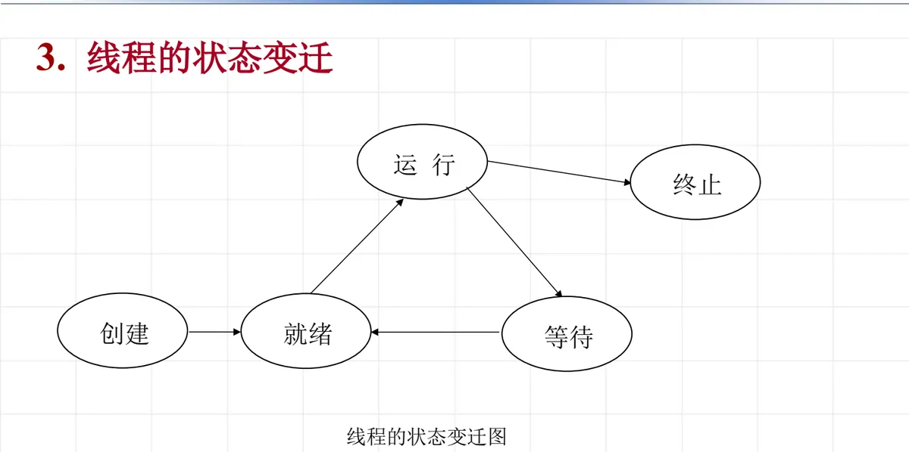
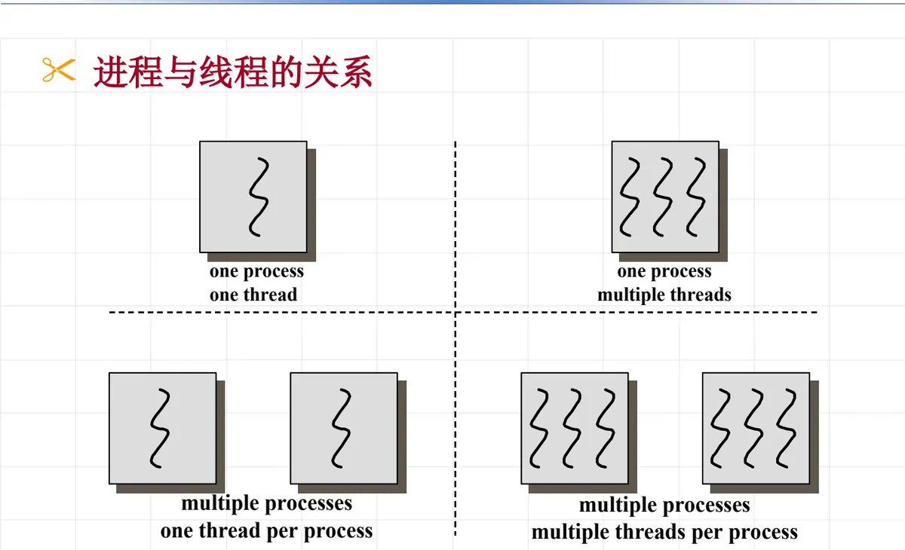

操作系统原理 · 第 4 章 进程及进程管理
4.9 线程概念及特点
到这一节为止，进程一直是系统里唯一的活动单位：它既是被分配资源的对象，又是被调度执行的对象。这一节要说明，正是这种「两种身份合一」的结构限制了并发的效率，于是有了线程。我们按三条线索展开：先看单线程进程的效率问题，再看解决问题的思路与线程的定义、状态，最后看进程与线程的关系以及 Linux 中的线程控制接口。
1. 为什么要引入线程
在只支持进程的系统中，一个进程只有一个执行路径，这样的结构在并发上暴露出四方面的问题：
- 进程切换开销大：切换进程要保存和恢复完整的现场，包括地址空间等大量资源信息；
- 进程通信代价大：进程之间有独立的地址空间，交换数据必须依靠操作系统提供的通信机构，不能直接读写；
- 并发性粒度较粗、并发度不高：并发的基本单位是整个进程，进程内部的多个活动无法分别被调度；
- 不满足客户/服务器计算的要求：服务器要同时响应大量客户请求，用进程一个一个去对付，负担太重。
回顾一下历史：操作系统中引入进程，目的是使多个程序并发执行，以改善资源使用率和提高系统效率；而在进程之后再引入线程，则是为了减少程序并发执行时所付出的时空开销，使并发粒度更细、并发性更好。
解决问题的思路是：把进程的两项功能——「独立分配资源」与「被调度分派执行」——分离开来。进程作为系统资源的分配单位，拥有地址空间、打开的文件等资源，不需要频繁地切换；线程作为系统任务调度的基本单位，只带自己私用的运行栈和处理机执行环境，能轻装运行，因而可以被频繁地调度和切换。正是在这种指导思想下，产生了线程的概念。
2. 什么是线程
线程是比进程更小的活动单位，它是进程中的一个执行路径（执行分支）。一个进程可以有多条执行路径，也就是多个可以独立活动的单位。换个说法，线程可以这样描述：
- 它是进程中的一条执行路径；
- 它有自己私用的运行栈和处理机执行环境；
- 它与其他线程共享分配给进程的内存、文件等资源；
- 它是单个进程所创建的许多个同时存在的线程中的一个。
「私有的」和「共享的」这两条要一起看：线程之所以轻，是因为它只独占栈和现场这类「执行」所必需的东西；而地址空间、文件这些「资源」由进程统一持有，同进程内的线程自然共享，因此它们之间的通信不需要经过操作系统，直接读写共享数据即可。这也解释了上一节的问题为什么能解决——切换线程不必切换地址空间。
（1）线程的状态变迁
线程作为调度的基本单位，同样有生命周期，它的状态与进程的状态是平行的一套：创建、就绪、运行、等待、终止。新线程被创建后进入就绪状态，被调度程序选中后运行；运行中若等待某个事件（如 I/O 完成、信号灯）则进入等待状态，事件到来后回到就绪状态；运行结束时进入终止状态。

3. 进程与线程的关系
把进程与线程放在一起比较，可以清楚地看到「一个资源单位 + 若干执行单位」的结构：进程持有资源，线程在其中执行；一个进程里的多个线程共享该进程的资源，各自独立地被调度。

按「一个进程里有几条执行路径」来划分，已有的操作系统大致分三类：
- 单进程单线程：MS-DOS 支持单用户进程，进程是单线程的；
- 多进程单线程：传统 UNIX 支持多用户进程，但每个进程仍然是单线程的；
- 多进程多线程：很多著名的操作系统都支持多进程多线程，如 Solaris、Mach、SVR4、OS/390、OS/2、Windows、Linux 等。
此外，Java 的虚拟机运行环境则是单进程多线程的例子：整个虚拟机是一个进程，而语言层面上的多个执行线索由虚拟机映射到该进程内的多个线程上。
4. Linux 系统中的 pthread 线程控制接口
Linux 下的线程操作由 pthread 线程库提供，常用的控制接口有创建、终止、等待和分离四个：
pthread_create() /* 创建线程 */
pthread_exit() /* 终止线程 */
pthread_join() /* 等待线程结束 */
pthread_detach() /* 分离线程 */（1）创建线程的调用形式
int pthread_create(pthread_t *tid,
const pthread_attr_t *attr,
void *(*start_routine)(void *),
void *arg);四个参数的含义是：
- tid：指向返回线程标识符的指针，创建成功后可以用它来引用这个线程；
- attr：设置线程属性；
- start_routine：线程运行函数的地址，新线程就从这里开始执行；
- arg：运行函数的参数。
（2）线程等待
线程等待就是等待一个线程的结束，由 pthread_join 完成，它的两个参数是 tid（等待线程的标识符）和 thread_return（存储等待线程的返回值）。这是一个阻塞函数：调用它的线程将一直等待，直到被等待的线程结束为止；当函数返回时，被等待线程的资源被收回。这一点与进程的 wait 原语类似——父进程等着回收子进程，只是这里等待的对象换成了同一进程内的线程。
（3）程序范例
下面这段代码给出了一个线程函数的样子：它打印全局变量 A 的值，然后把它加一，最后返回。
void * thread_func(void* arg)
{
printf("A in thread is %d\n", A);
A += 1;
return NULL;
}可以看到线程函数的接口十分简单：入口参数是一个 void 指针，返回值也是 void 指针。真正的「并发」体现在主线程用 pthread_create 多次以同一个 thread_func 为入口创建线程时——多个线程同时执行这段代码，共同访问全局变量 A，于是又回到了前面几节的老问题：共享数据的访问必须互斥。这正是下一节要解决的问题。
本节小结
- 单线程进程的四个效率问题：切换开销大、通信代价大、并发粒度粗、不满足客户/服务器计算的要求；
- 引入线程的动机是减少并发执行的时空开销、细化并发粒度。办法是把「独立分配资源」与「被调度分派执行」两项功能分开：进程是资源分配单位，线程是调度执行单位；
- 线程是进程中的一条执行路径，私有运行栈和现场，与同进程的其他线程共享内存、文件等资源；其状态为创建、就绪、运行、等待、终止；
- 按执行路径的数目，操作系统可分为单进程单线程（MS-DOS）、多进程单线程（传统 UNIX）、多进程多线程（Solaris、Linux、Windows 等），Java 虚拟机是单进程多线程的例子；
- Linux 用 pthread 库管理线程：create 创建、exit 终止、join 阻塞等待并回收资源、detach 分离。